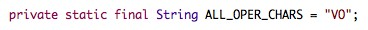

There are three ways to extend the Inspector (a.k.a. create custom applications
using VerbNet). The first two simply involve downloading the Inspector application,
adding your custom code, and running the new, enhanced Inspector. The third way
pertains more to integrating the Inspector into an existing application and then
adding your custom code.
For the purposes of displaying the results of your custom code, you can send
output to standard out (using System.out.println), standard error
(using System.err.println), or to an external file (using Java's java.io package).
Method 1: Good for small- to medium-sized programs. Download the Inspector
application. In the EventManager class, add code that implements the custom
application directly into the
marked areas for the beginning and end of each event that you need to use.
Moreover, to improve readability
this code can be in the form of a single method call to another method that you create
inside the EventManager class.
You can add as many methods to this class as you
need but they must all be 'static'.
The method above is shown as 'private' because no method outside of the EventManager
class would call it. The Inspector is then compiled and run according to
the details provided in the example scripts. No further modifications are required.
The mock application contained in the Inspector download uses Method 1 for extension.
Method 2: Good for medium- to large-sized applications. This method is similar to
Method 1 except that no custom methods are added to the EventManager class directly.
The majority of the custom code goes into additional files and classes that are added to the same
package as and compiled with the rest of the Inspector source code. Most of the custom
code added to the EventManager class is in the form of method calls to other methods
in these new classes.
Make sure each new file contains the line package vn; at the top of the file.
Each file should be placed into the src directory along with the other
three source files.
The methods invoked from the EventManager class must be 'public static' or 'static'. Here is the
file named MyAnalyzer.java:
The import statement allows for quick access to the ArrayList object.
The above file relies on yet another
class that exists in its own file called ClassSyntaxPair.java, shown here:
So you see, only the methods being invoked from the EventManager class must be 'static'.
From there onward, Java's rich object-oriented model can be utilized. The above code merely creates a
list of every frame syntax visited along with the class in which the frame syntax was contained.
The VxC application, a VerbNet-Cyc mapper, uses Method 2 for extension.
Method 3: The final method involves integrating the Inspector into
an application of any size. Such a task could be performed in a variety
of ways, depending on the requirements of the environment and the tendencies of
the developer. This method is better suited for more experienced developers.
Only the simplest of development environments will be considered here (no attention
will be paid to any given IDE's configuration).
Here's the quick technical information about the process.
In general, integrating the Inspector into an existing application is the same
as using code from a Java package (like java.io, java.util,
javax.swing, etc.). As long as the Java Virtual Machine (i.e. the
java executable) can find these files:
vn/EventManager.classvn/Inspector.classvn/Sweeper.class
then the Inspector is available to invoke.
The Java Classpath just needs to include the directory in which the above vn
directory (with the above class files) is contained. This directory is contained
in the Inspector download. Notice that this does not mean to include
the path to the vn directory itself. An import statement can then
be used in your code (import vn.*;) or you can fully qualify the invocation
of the Inspector as shown below. Now,
here are some easy-to-understand scenarios that might apply to your given situation.
Set-up 1: The simplest possible development environment for your application is to have all your source
files and class files in the same directory:
- MyApplication/
- MyClass1.java
- MyClass2.java
- MyClass3.java
In this scenario none of the source files uses a package statement.
If you execute the command
javac *.java
while in this directory, all the source
files are compiled into class files and then you have:
- MyApplication/
- MyClass1.java
- MyClass1.class
- MyClass2.java
- MyClass2.class
- MyClass3.java
- MyClass3.class
This is most likely the current state of your application directory.
Now download the Inspector and copy the three *.java
files to the directory that contains the source files for the existing application.
Now we have:
- MyApplication/
- EventManager.java
- Inspector.java
- MyClass1.java
- MyClass1.class
- MyClass2.java
- MyClass2.class
- MyClass3.java
- MyClass3.class
- Sweeper.java
Now, in order to compile with the Inspector source, it is important to add one option to your compile command:
javac -d . *.java
The option places the output files (class files) into the current directory (denoted with .).
This option won't affect any of the previous files, but will place the output files of the
Inspector into the proper subdirectory.
Executing this command gives:
- MyApplication/
- EventManager.java
- Inspector.java
- MyClass1.java
- MyClass1.class
- MyClass2.java
- MyClass2.class
- MyClass3.java
- MyClass3.class
- Sweeper.java
- vn/
- EventManager.class
- Inspector.class
- Sweeper.class
Your application is now ready to be run. Assuming the class MyClass1 contains the main
method, executing the command
java MyClass1
will execute your application.
However, we haven't hooked up any code yet! Now that the compilation process has been explained
let's look at how we invoke the Inspector from existing code.
When we invoke the Inspector from an existing application, the entire thing runs
just as if you were to run the Inspector independently on the command line.
The Inspector prints output and fires events as determined
by the command line parameters. You can invoke the Inspector anywhere in your code.
Here is an example in which the Inspector is invoked from a method in an arbitrarily
chosen class, MyClass2:
As you can see, the invocation of the Inspector happens (using the run method)
just as one might invoke the Inspector as a stand-alone application on the command line.
The import statements shown above are for example only, no additional
import statements are required for the Inspector if the above syntax
is used to invoke it.
Then, code is added as described in Method 1 or Method 2
of this guide. Only this time, in addition to placing code in the EventManager class
or into new files, you can place custom methods into the classes that already exist
for the existing application and call them from the EventManager class like so:
This provides you with a large amount of flexibility when integrating the Inspector
into your application. The above example also shows an example of parsing the
text parameter, a common task within the Inspector application framework.
As mentioned in the Javadoc documentation, the text parameter is
the exact line of text that the Inspector would show in the normal output mode,
but with full view options enabled (-Vab). The labels for a given event type
(class, member, frame, etc.) are guaranteed to have the same format each time
an event is fired for that event type. Therefore, you can rely on the positioning of
parentheses, brackets, braces, spaces, etc. to perform the parsing. In the
example above, the verb is extracted from the member event text by locating
the two spaces and taking the text in between them. This an example of the
event text for the member event type:
MEMBER: yelp (wn=yelp%2:32:00)
The first space will be the one before the verb and the second space will be the one after it.
Now that you've called the Inspector at a given point
during the existing application's execution, called custom methods from the
EventManager class to be executed when events fire, and implemented
the custom methods located in a variety of places, the new enhanced application
is ready to compile an run. Simply execute these two commands in the directory
with all the source files:
javac -d . *.java
java MyClass1
Set-up 2: The second type of development environment is very similar to the first
except that it assumes you are using one or more packages in your Java source files.
The only thing that changes is the file organization and not how you add custom code to the
source files. Let's once again assume that your source directory appears as:
- MyApplication/
- MyClass1.java
- MyClass2.java
- MyClass3.java
Let's also assume that the line package abc; is at the top of
every file. Compiling with the command
javac -d . *.java
gives:
- MyApplication/
- MyClass1.java
- MyClass2.java
- MyClass3.java
- abc/
- MyClass1.class
- MyClass2.class
- MyClass3.class
When you add the Inspector source files to the source directory and compile
again using the same command you have:
- MyApplication/
- EventManager.java
- Inspector.java
- MyClass1.java
- MyClass2.java
- MyClass3.java
- Sweeper.java
- abc/
- MyClass1.class
- MyClass2.class
- MyClass3.class
- vn/
- EventManager.class
- Inspector.class
- Sweeper.class
Assuming the class MyClass1 still has the main method for the application,
the application is executed from within the MyApplication directory with the command:
java abc.MyClass1
Notice how since packages are being used the class must be preceded by the package and a period.
Now the only thing left to do is to insert the proper code. Follow the same
procedure specified in Set-up 1. Invoke the Inspector whenever you wish with the
line
vn.Inspector.run( <command-line> );
where <command-line> contains all the arguments for the Inspector application in a
single string, just how they would be supplied on the command line. Then modify
the EventManager class and add the custom code as previously described
and compile and run with
javac -d . *.java
java abc.MyClass1
Final Notes: Even though using the verb-frame pair mode is optional, both the mock application
and VxC take advantage of and require this mode for execution. Verb-frame pair mode
is a way to enumerate and visit every syntactic frame for each verb.
It is engaged with the -q option or by using of the -Vq view option.
Some additional information about extending the Inspector can be found
in the Javadoc documentation for the EventManager class and the non-Javadoc comments
in the EventManager.java source file.
It is also important to note that the Inspector's run and main
methods do not throw any exceptions. Any exceptions that reach these two methods
are caught and dealt with before the program ends. Exceptions are usually handled by
printing the appropriate messages to standard error.
Finally, if you need to pass additional information to the Inspector so it can perform
its custom duties (like a special path from which to extract some data), you can
modify any of the source files you need. The simplest way is to just hard code
a value into a new 'static' class variable but you can also add additional command
line arguments just as the VxC application has done. Adding new command line arguments
increases usability for the developer and all additional users (so that it is not required
to recompile the code each time you need to change a supplemental piece of data). The following
explains the process for adding a new command line argument to the Inspector.
A command line argument will be most easily implemented by adding a new "operator"
whose argument will be your new command line argument. Consider we want to add a new
path that the Inspector uses to extract data from. Let's call this the path to the x-ray
file, just for argument's sake. Thus, we want to be able to supply this path on the command line
like so:
java vn.Inspector -qs ../vn-xml -Ospray -X ~/x-ray.file
The new operator is -X and its argument for this execution is ~/x-ray.file. To implement
this new operator, first add a 'public static' or 'static' class variable to any class really,
either the EventManager class or a custom class (the following examples are just a few lines of each class):
This will be the variable that we use for the new path (which you can access from anywhere in
your application since it is accessible to all classes in the package). Then you just
modify the Inspector class to recognize the new operator on the command line and set the above
variable. To do this we first add the operator symbol to the list of all operators. So the line

becomes
Then modify the usage message so users of your application know what the new operator is about.
Change the main usage line to
and add the proper description of the new operator argument:
If the operator were optional, we'd include brackets around it ([-X <x>]). Finally
we modify the analyzeArguments method to accept the operator and set
the proper variable. Add code to set the new variable after the only-these-files
operator's case, like so:
The variable buddy is used to hold the token right next to the current
operator being processed. Then we're done! The Inspector application
correctly recognizes the new operator and sets the appropriate variable
(replace EventManager with the name of whatever class houses the new variable). If you
want to perform some additional error checking on a path variable (like xRayPath), look at the
code later on in analyzeArguments that checks the validity of the
XML input directory (stored in the variable vnDir). This code is similar to how
you would validate a path parameter supplied on the command line. But in general, you can
check your new command line arguments for errors after the main loop in analyzeArguments
has completed.
|
|